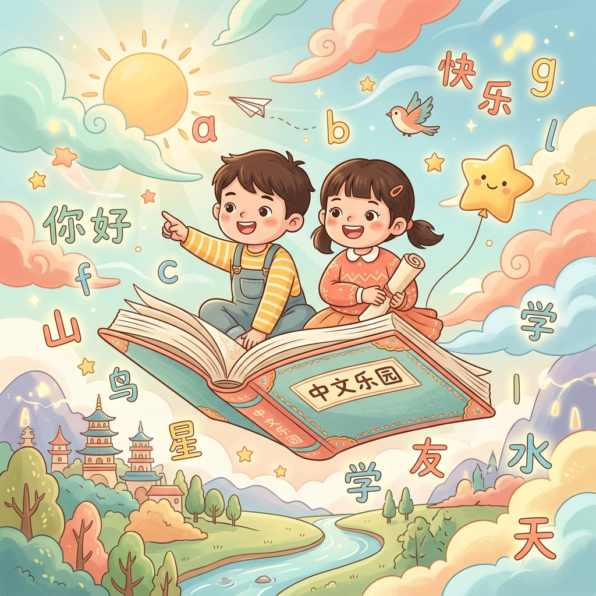
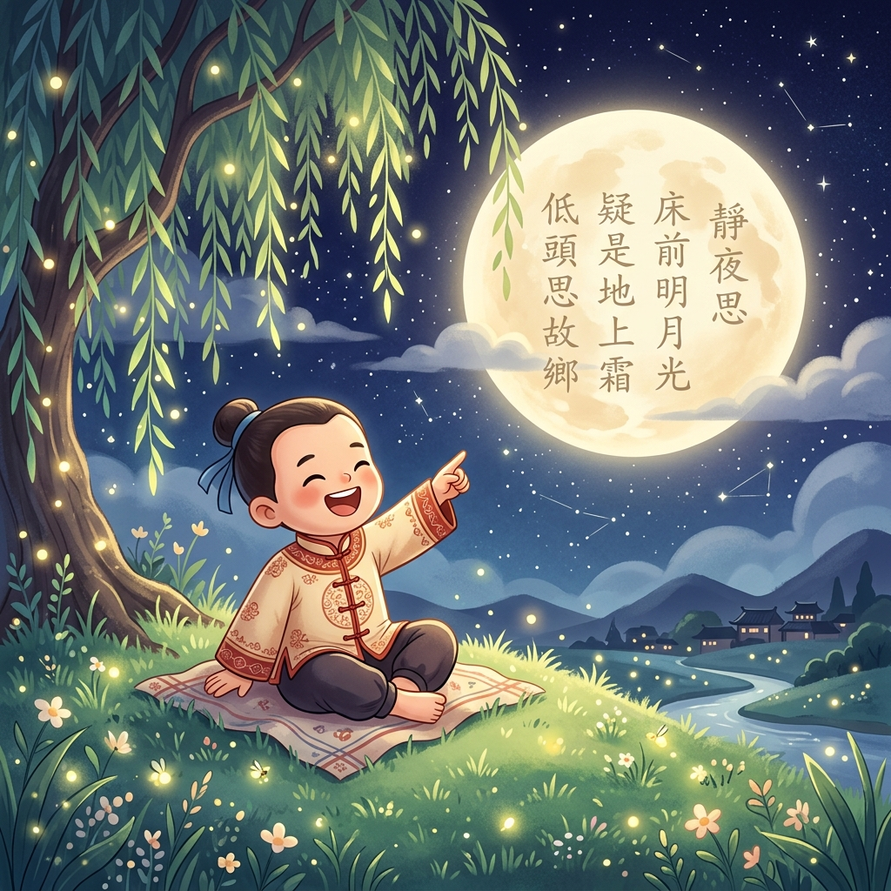

百词听写大冲关
178个核心生字听写，点击拼音播放普通话，支持 A4 打印与乱序重组，字词满分不费力！
课文伴奏朗诵台
背诵领读神器，内置《彩色的中国》多轨专属伴奏，慢速跟读点读，小主播的练兵场！
📅 今日学习打卡
今天也是收获满满的一天，和翰翰一起打卡盖章吧！

178个核心生字听写，点击拼音播放普通话，支持 A4 打印与乱序重组，字词满分不费力！
背诵领读神器，内置《彩色的中国》多轨专属伴奏，慢速跟读点读，小主播的练兵场！
今天也是收获满满的一天，和翰翰一起打卡盖章吧！
点击好看的卡片，听最标准的拼音老师发音。让我们一起来指读练习吧！
